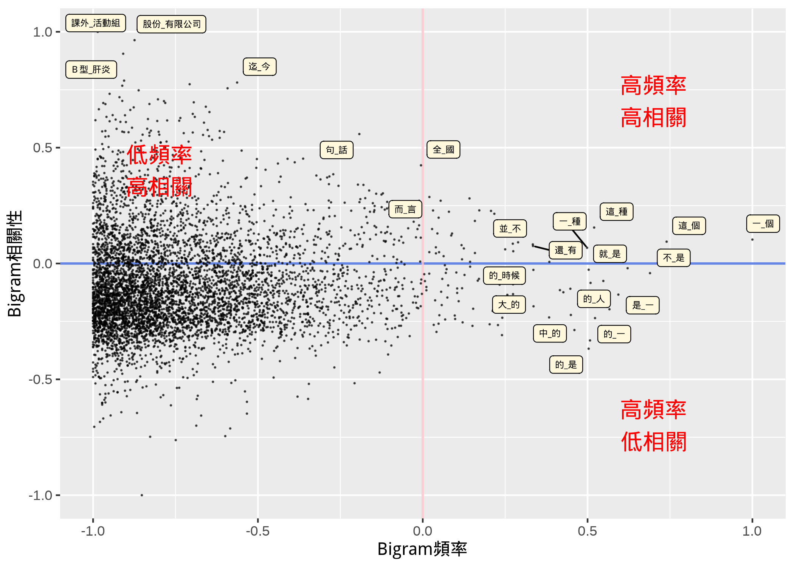
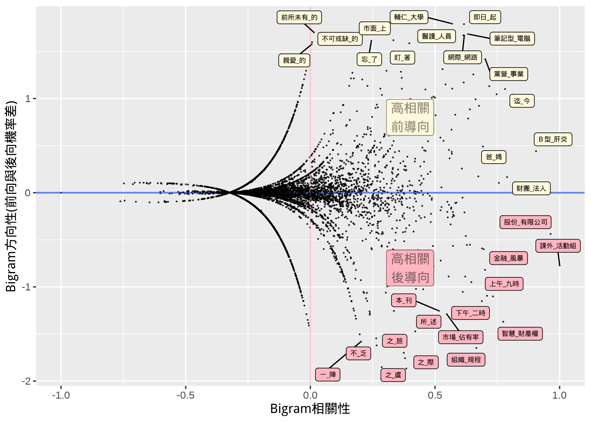
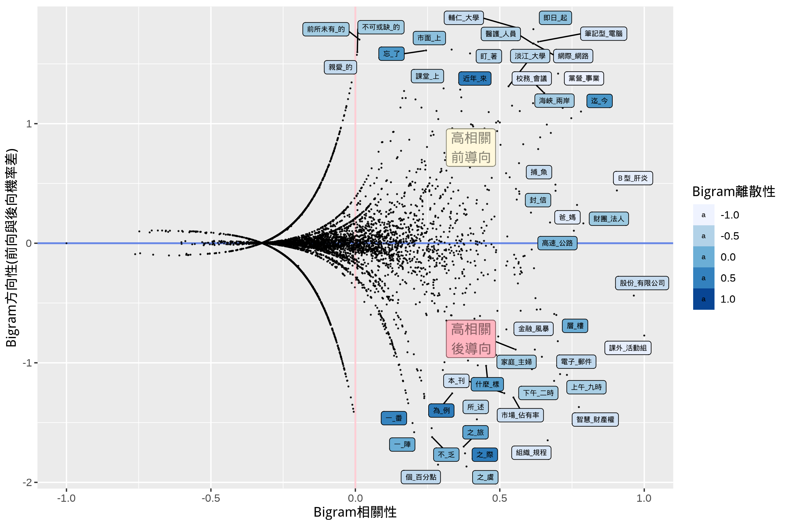

語料庫分佈資料用於語言學分析:
除了頻率還有什麼?
2022年10月29日
語料庫語言學
- 頻率(Frequency)一直是語料庫語言學研究中，相當重要的分佈訊息(Distributional
Properties)。
- 從單一詞彙頻率、多字詞組頻率、或是許多量化研究中的特定語言單位頻率計算，都成為許多語言學研究假設的佐證基礎。
語料庫中的分佈訊息
- 透過語料庫，最常使用與擷取的兩種分析資料是：
- 某個特定語言單位/結構在語料庫中出現(occurrences)的頻率
- 如：morphemes, words, grammatical patterns
- 某些語言單位/結構在語料庫中共同出現(co-occurrences)的頻率
- 某個詞素多常與某個詞彙一起出現？
- 某個詞彙多常與某個句構一起出現？
- 某個詞彙/句構多常與某個文類/文體一起出現？
- 這些分佈資料往往都成為語言結論的依歸。
除了頻率，還有什麼？
- 近年來有許多研究顯示，我們的語感，除了頻率以外，還有很多更細緻語感表現，是超越簡單的頻率。
- 語料庫中的「頻率」，體現我們語感中，「哪個語言詞彙或結構特別常出現？」的預測。
- 然而，「語用為本(Usage-based
Grammar)」之語法研究，顯示說話者更具備多層面(Multifaceted)的語感預測能力:
- 相關性(Exclusivity)
- 離散性(Dispersion)
- 方向性(Directionality)
- 我們以「搭配詞」為例，簡單向大家闡述這些概念。
假設我們找出語料庫中所有的二字詞組（即:
Bigrams），建立二字詞組頻率表（Frequency
List），高頻的二字詞組可能會像是…
這些高頻Bigram，符合我們語感預測，但對於具體語言學假設的論證，似乎幫助不大？
如果我們帶入「相關性」這個層次的分佈訊息呢？

除了「相關性」，如果我們納入的是「方向性」呢？

當然，我們可以同時納入「相關性」、「離散性」與「方向性」。

除了「頻率」，還有…？
- 如果我們要回答的研究問題是「中文中常見的搭配詞組有哪些？」，我們可能就必須要更加善用語料庫所提供的分佈信息。
- 一個具有代表性的搭配詞組，可能不僅僅頻率必須要高，同時分布要夠廣，且詞與詞之間的相關性可能還有方向性之區分.
分佈信息與語言習得
- 我們也發現，語言使用者在語言學習的過程當中也不斷學習到這些語言當中的機率分佈表現(statistical distributional
properties)。
- 外語學習者也慢慢對於雙字詞組中，前向與後向詞彙的預測，越來越嫻熟。
- 外語學習者也越來越會使用分布並沒有這麼廣泛的雙字詞組
語料庫語言學的下一步？
- 在使用語料庫語言學方法，探索一個語言學研究議題時，我們應更加注意「多面向(Multifaceted)」的語料庫語言學分佈訊息，並考量不同面向的分佈訊息，彼此間互動與可能代表的意義。
- 在常見的語料庫語言學研究議題裡（如：近義詞研究、構式功能與語意研究、關鍵詞研究等），應多加考量「離散性」與「方向性」，讓研究結論能更全面地反映語言使用者之語言能力(Native
Intuition, Grammatical Competence)。
感謝聆聽!
參考資料：Stefanowitsch, A. (2020). Corpus Linguistics: A
guide to the Methodology. Berlin: Language Science
Press